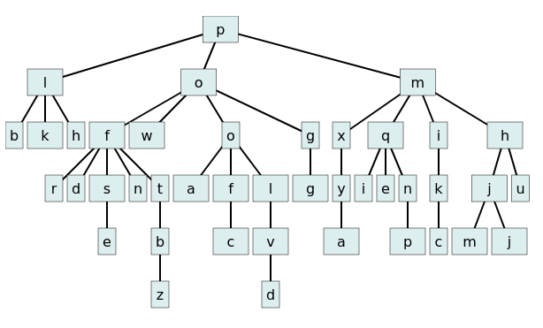

| Author: | Wojciech Muła |
|---|---|
| Added on: | 2025-01-12 |
We have a tree of any degree and depth. Each node has assigned a bounding box of its graphical representation.
We want to draw such data structure, taking into account geometry of nodes.
The algorithm to draw trees runs in two phases. In the first phase we group nodes by their depths. For each depth we calculate the maximum height and assign nodes at y coordinate. The y value is the sum of height of previous depths plus some horizontal spacing between each level.
The second phase places horizontally the nodes at the given depth. We scan nodes by their depths, starting from the deepest level, up to the root; nodes are scanned left-to-right.
The current node is moved to the right border of its predecessor, with some horizontal space, like node.x = prev.x + prev.width + x_space. Then, we calculate the x coordinate of node center: xc = node.x + node.width/2.
If the node has children, we calculate the desired x coordinate xd. It may be simply an average of the first and last child centers, visually better results are obtained by averaging centers of all children nodes.
xc xd
│ |
▼ │
╶──────┐ ┌──────┐ │
depth │ │ node │ │
╶──────┘ └──────┘ │
▼
┌─────────┐ ┌─────────┐ ┌─────────┐
depth + 1 │ child 0 │ │ child 1 │ │ child 2 │
└─────────┘ └─────────┘ └─────────┘
xd
│
▼
╶──────┐ ┌──────┐
depth │ │ node │
╶──────┘ └──────┘
┌─────────┐ ┌─────────┐ ┌─────────┐
depth + 1 │ child 0 │ │ child 1 │ │ child 2 │
└─────────┘ └─────────┘ └─────────┘
xc
│
▼
┌────────────┐ ┌─────┐ ┌──────┐
depth │ │ │ │ │ node │
└────────────┘ └─────┘ └──────┘
╶────┐ ┌─────────┐ ┌─────────┐
depth + 1 │ │ child 0 │ │ child 1 │
╶────┘ └─────────┘ └─────────┘
▲
│
xd
xc
│
▼
┌────────────┐ ┌─────┐ ┌──────┐
depth │ │ │ │ │ node │
└────────────┘ └─────┘ └──────┘
╶────┐ ┌─────────┐ ┌─────────┐
depth + 1 │ │ child 0 │ │ child 1 │
╶────┘ └─────────┘ └─────────┘
▲
│
xdTry algorithm on-line.